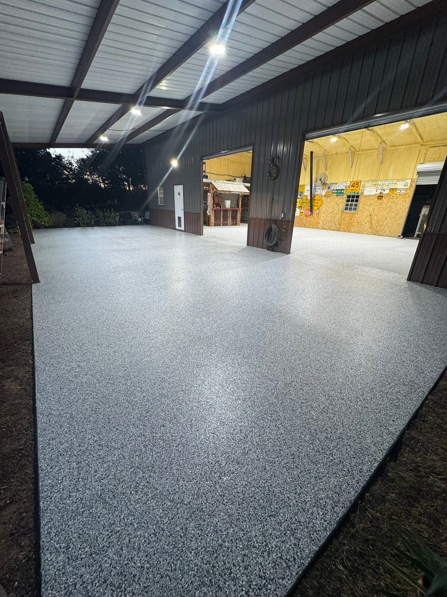
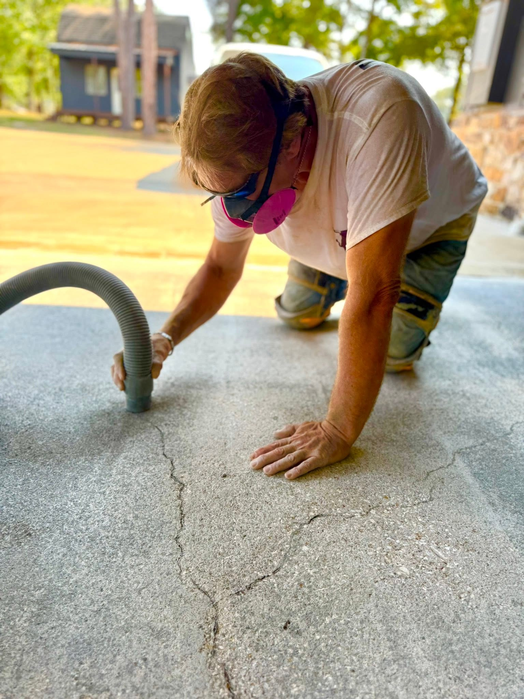
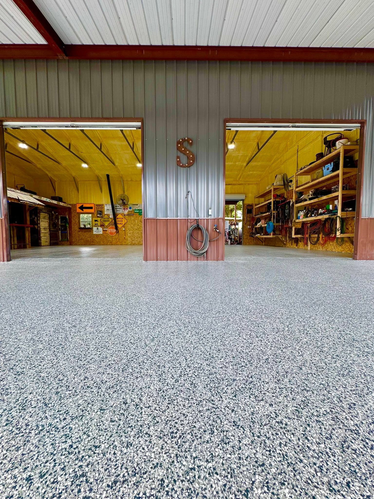
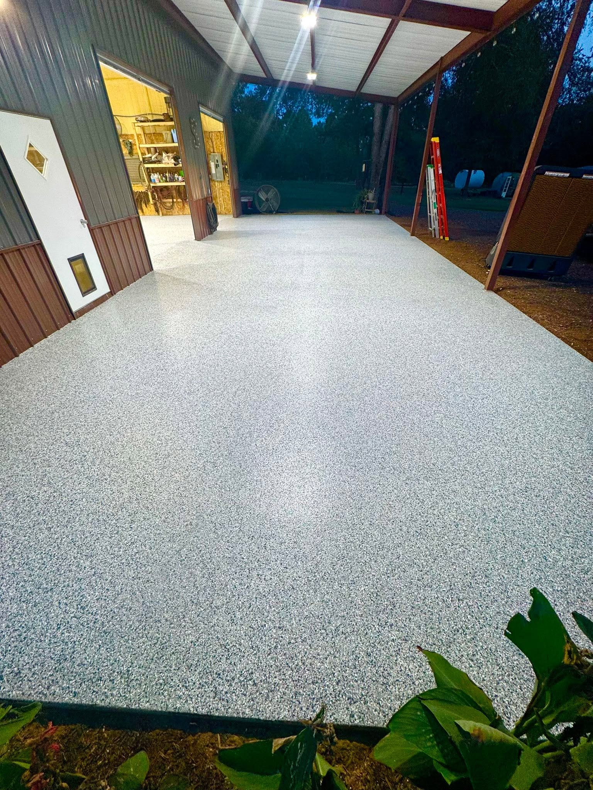
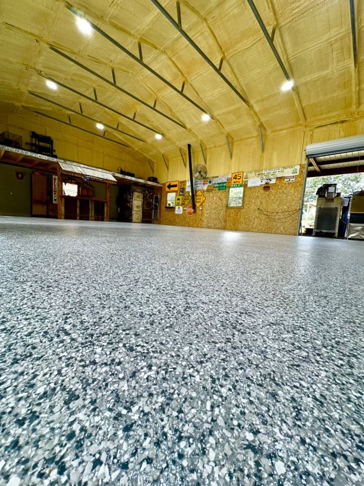

Gladewater garage project
Shop-grade flake flooring with a showroom finish.
A working garage and covered shop area moved from cracked, dusty concrete to a bright flake system that looks clean under task lighting and stands up to real use.

Before and after
From cracked concrete prep to a bright, finished shop floor.
There was only one before photo, so this page uses it intentionally: the preparation shot shows the worn concrete and cracks before the finished flake system turned the space into something cleaner, brighter, and easier to maintain.


Before: cracked concrete prep
After: finished flake floor
Drag the project slider


Want a cleaner garage?